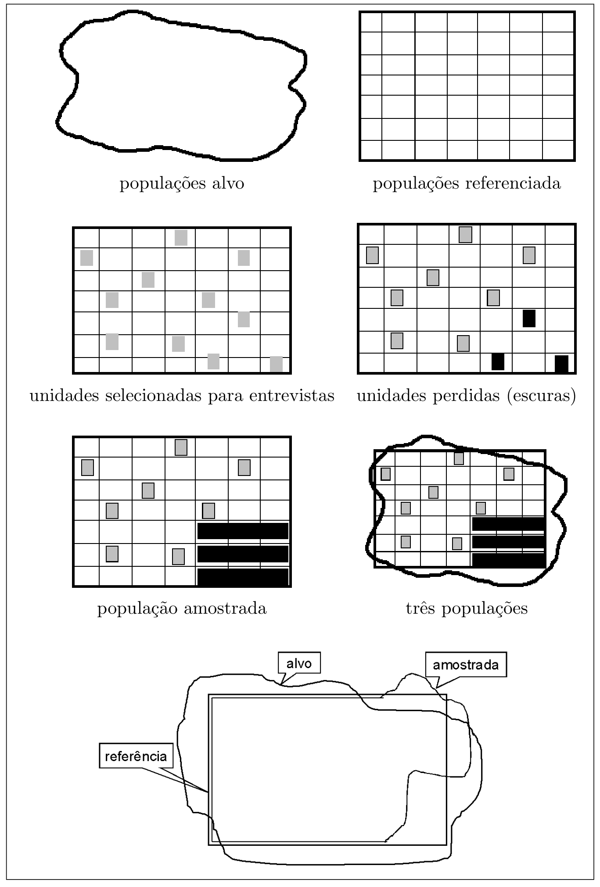

Menu · Bolfarine & Bussab · Capítulo 1 · págs. 1–36
O capítulo sem fórmulas. Ele fixa o vocabulário, separa as três populações, distingue amostra “representativa” de amostra probabilística e mostra onde o erro amostral — o único que a teoria controla — se encaixa no erro total de um levantamento.
Amostragem é coisa do cotidiano: o cozinheiro prova o tempero, a pessoa testa a temperatura da sopa com uma colherada, o médico julga o estado do paciente por um exame de sangue. Em todos os casos o objetivo é o mesmo — obter informação sobre o todo a partir de uma parte. E em todos os casos há um jeito de errar sistematicamente: não mexer a sopa antes de tirar a colher subestima a temperatura do prato todo. Esse erro não diminui provando mais colheradas da mesma superfície; é um viés do protocolo de escolha da amostra, e é dele que os cursos de inferência costumam não falar.
Os cursos introdutórios de inferência também ensinam a generalizar da amostra para o todo, mas com uma ênfase diferente: a população é infinita, ou melhor, a amostra é retirada de uma distribuição de probabilidade. Garante-se que as observações são independentes, com igual probabilidade, de uma mesma população teoricamente infinita — e não se discute como a amostra foi obtida. Aqui a população é finita, enumerável ou pelo menos passível de descrição, e o modo de sortear é exatamente o objeto de estudo. É essa mudança de ponto de vista que o capítulo 2 vai formalizar: a aleatoriedade não está nos valores (que são fixos), está em quais unidades entram na amostra.
Toda pesquisa quantitativa exige planejar, executar, corrigir e analisar. Um estatístico experiente desenvolve seus próprios procedimentos, mas tem dificuldade em transmiti-los sem convívio. O que se pode transmitir é uma lista de tópicos — um checklist — que nunca é definitiva nem completa, mas serve de guia aproximado. A lista dos autores está no Apêndice B (livro p. 265); as palavras-chave, no Apêndice A (p. 261). As seções deste capítulo comentam os itens dessa lista; os capítulos técnicos aprofundam só o grupo “planejamento e seleção da amostra”.
O objetivo geral de uma pesquisa costuma caber numa pergunta — “qual o potencial do mercado do município X para um novo produto cultural?”. As dificuldades começam na hora de responder: investigar os mais ricos ou os de maior escolaridade? Estudar levantamentos semelhantes já feitos, em outras regiões ou no passado, é uma das melhores fontes para operacionalizar objetivos — aprende-se muito com os erros dos outros. Postula-se até que “um problema corretamente definido já está resolvido”. Quase sempre o levantamento tem múltiplos objetivos; na prática, convém prender-se a um conjunto pequeno de questões-chave e resistir à tentação de acrescentar perguntas “só para aproveitar” a pesquisa.
O passo seguinte é criar bons indicadores (variáveis, escalas) para os constructos de interesse: inteligência, nível socioeconômico, desempenho escolar, potencial de mercado, ansiedade, satisfação. O QI é o indicador clássico de inteligência; o Critério Brasil (antigo ABA/ABIPEME) combina escolaridade, moradia e bens para expressar nível socioeconômico; SAEB, ENEM e Pisa medem desempenho escolar; “pessoas, com dinheiro e disponibilidade para gastar” é a decomposição operacional de potencial de mercado. Essas escalas são aceitas porque foram validadas: criadas, analisadas no contexto, comparadas, e verificada a pertinência entre valores e significado. Boa parte dos livros de metodologia trata de transformar conceitos teóricos em escalas confiáveis (Pedhazur e Schmelkin, 1991, na abordagem mais quantitativa).
A cada unidade elementar (UE — definida na seção 3.1) associam-se uma ou mais características de interesse: as variáveis ou atributos. Se a UE é a família, interessam renda total, número de membros, sexo e escolaridade do chefe; se é a empresa, faturamento, lucratividade, ramo, consumo de energia. É o objetivo específico que orienta a escolha da UE e das variáveis: para poder de compra usa-se renda familiar total; para política de emprego, renda individual do trabalhador. E a escolha da UE nem sempre é óbvia: num estudo do setor de alimentação, o restaurante dentro de uma montadora de automóveis é unidade ou não? Depende de a exploração ser própria ou terceirizada.
Com as variáveis definidas, é preciso dizer qual característica populacional — o parâmetro — será estimado. A falta de uma definição inequívoca aqui já foi fatal para muitas pesquisas.
Quer-se medir o crescimento das vendas das empresas do setor num ano. Há pelo menos duas maneiras:
Os dois resultados podem ser bem diferentes, sobretudo se as grandes empresas se comportam de modo distinto das pequenas: em (1) cada empresa pesa igual; em (2) as grandes dominam. A escolha entre um e outro é fundamental para o desenho amostral. No capítulo 2 esses dois parâmetros reaparecem com nome — a razão média populacional e a razão populacional — e o capítulo 5 é inteiro sobre estimar .
Quando o levantamento exige estimativas também para partes da população (estratos, subpopulações), o cuidado no planejamento tem de ser redobrado, para garantir estimadores adequados para o todo e para as partes. E nada impede que se usem parâmetros diferentes em estratos distintos.
Unidade elementar (ou elemento) é o objeto ou entidade portadora da informação que se quer coletar: pessoa, família, domicílio, loja, empresa, escola. Precisa ser definida com precisão — “família” parece natural, mas um domicílio com o casal, uma filha casada, o genro e um neto é uma família ou duas? E se a filha é divorciada? Em vez de inventar definições, busque as já usadas (os manuais do IBGE, no caso), que permitem comparar pesquisas.
Unidade amostral é o que o plano de fato sorteia. Pode ser uma única unidade elementar ou um conjunto delas. Na pesquisa eleitoral, o eleitor é a unidade elementar; se o plano sorteia domicílios e entrevista todos os eleitores de cada um, a unidade amostral é o domicílio. Planos em múltiplos estágios usam várias unidades amostrais num mesmo desenho: cidades, quarteirões dentro das cidades, domicílios dentro dos quarteirões, eleitores dentro dos domicílios.
Unidade de resposta (respondente) é quem fornece a informação. No censo demográfico, um único morador — usualmente o chefe ou o cônjuge — responde pelas questões simples sobre todos os moradores.
População é a reunião de todas as unidades elementares. Mas qual reunião? O livro acompanha o exemplo do potencial de mercado em três aproximações:

A amostra foi retirada da população amostrada: é só sobre ela que valem as inferências estatísticas. Estender à população referida exige uma análise — qualitativa, às vezes quantitativa — das unidades perdidas e das agregadas; estender à população alvo exige conhecimento substantivo do assunto. No exemplo: os condomínios fechados (ricos) ficaram de fora, o que subestima o potencial; mas as favelas e os domicílios coletivos (pobres) também ficaram, o que o superestima. Qual efeito domina? Não se sabe sem outros estudos — e é isso que o relatório precisa dizer.
Se a pesquisa deve responder separadamente para partes preestabelecidas da população (o mercado das regiões sul e norte, digamos), isso tem de ser conhecido antes do plano: separa-se o SR nos SC do sul e do norte, como se fossem duas populações. Cada uma dessas subpopulações é um estrato. A estratificação serve para dar respostas às partes e para melhorar a estimação — o capítulo 4 mostra o quanto.
Há uma tentação forte de querer conhecer todas as partes da população, o que multiplica estratos e leva a tamanhos de amostra inviáveis. A solução de compromisso: os fatores básicos viram estratos; os secundários viram subclasses — partes da população que não entram no desenho mas são analisadas a posteriori. No exemplo, controla-se a amostra por sul/norte, mas o sexo do respondente não é controlado: a amostra pode acabar com um número insignificante de uma das categorias, invalidando conclusões por sexo. A diferença: no estrato as estimativas confiáveis são garantidas a priori pelo desenho; na subclasse, dependem de haver unidades suficientes.
Uma última advertência do livro: o sucesso do levantamento depende fortemente do conhecimento que se tem da população. Deve-se gastar boa parte do tempo (mais de 50%) estudando-a e definindo-a — a ponto de talvez a pesquisa se tornar dispensável.
O exemplo canônico de coleta é o censo demográfico do IBGE — e mesmo nele nem tudo é perguntado a todos: renda, ocupação e outras variáveis vêm de uma amostra de cerca de um em cada dez domicílios, por custo. Censos e pesquisas eleitorais são levantamentos (surveys): “passivos”, procuram descrever a população sem interferir. Quando se quer saber o que acontece com uma variável sob tratamentos controlados — a vacina reduz a incidência? a altura na gôndola aumenta a venda? — precisa-se de grupos tratados e de controle: é experimentação. A Figura 1.2 dá quatro critérios dicotômicos; só a combinação deles já produz 16 tipos de pesquisa. O livro fica com levantamentos, descritivos, de dados simples, por amostra.
Escolhido o tipo de investigação, escolhe-se o método de coleta. Dois critérios ajudam a organizar a variedade:
Em amostragem, a combinação mais usada é comunicação verbal com mensuração estruturada: questionário com entrevista pessoal; as variações comuns são por correio ou telefone. E o método de coleta condiciona o plano: um levantamento por correio costuma precisar de muito mais elementos que um equivalente com entrevista pessoal — por quê? Porque a taxa de resposta pelo correio é baixa e seletiva; para chegar ao mesmo número de respondentes (e tentar compensar a não resposta) enviam-se muito mais questionários.
Amostra é qualquer parte da população. Supõem-se já fixados as unidades de análise, o instrumento e o sistema de referência. O propósito da amostra é descrever os parâmetros do universo do modo mais adequado possível, permitindo generalizar dentro de limites aceitáveis de dúvida, com custo minimizado. Qualquer amostra fornece informação; nem toda amostra permite estender os resultados à população.
Pergunte a quem diz que uma boa amostra é “representativa” o que isso significa; a resposta mais comum é “uma micro representação do universo”. Mas para saber que a amostra é uma micro representação para a característica de interesse seria preciso conhecer o comportamento dessa característica na população — e aí o conhecimento seria tão grande que a amostra se tornaria desnecessária.
Outras vezes “micro representação” quer dizer amostra estratificada proporcional: divide-se a população em estratos por uma variável auxiliar e sorteia-se de cada estrato um número proporcional ao seu tamanho. Só que isso não conduz obrigatoriamente a resultados mais precisos.
A geografia da cidade agrupa os bairros em ricos (A), médios (B) e pobres (C); a prefeitura diz que 10% dos domicílios são A, 30% B e 60% C. Com orçamento para 1 000 entrevistas, a amostra “representativa” seria 100 / 300 / 600. Mas uma amostra “não representativa” com 600 / 300 / 100 pode dar resultados mais confiáveis: no estrato C os salários são muito parecidos — 600 domicílios é exagero —, enquanto no estrato A as rendas variam muito e 100 é pouco. A alocação que minimiza a variância leva em conta a dispersão dentro de cada estrato, não só o tamanho: é a alocação ótima de Neyman, seção 4.3.3 do livro. Volte a este exemplo depois do capítulo 4.
Diante da dificuldade de definir “representativa”, os estatísticos preferem o conceito de amostra probabilística: um procedimento em que cada amostra possível tem uma probabilidade conhecida, a priori, de ocorrer. Com isso toda a teoria de probabilidade e de inferência dá suporte às conclusões. Para generalizar a partir de outro procedimento — amostras intencionais, digamos — seria preciso uma “teoria da intencionalidade”, caso exista. É exatamente essa definição que o capítulo 2 formaliza como plano amostral: uma função sobre o conjunto de todas as amostras, somando 1.
Jessen (1978) cruza dois critérios. O primeiro: há ou não um mecanismo probabilístico no plano de seleção. O segundo: o “amostrista” usa um procedimento objetivo — cujo protocolo é inequívoco, produz a mesma amostra (ou uma com as mesmas propriedades) quando aplicado por pessoas distintas — ou subjetivo, que permite julgamento e sentimento para escolher uma “boa” amostra.
| Critério do “amostrista” | Seleção probabilística | Seleção não probabilística |
|---|---|---|
| objetivo | amostras probabilísticas — ex.: estratificada proporcional | amostras criteriosas — ex.: a “cidade típica” |
| subjetivo | amostras quase-aleatórias — ex.: amostragem por quotas | amostras intencionais — ex.: júri de especialistas, voluntários |
Uma imprecisão de linguagem que o livro assume: “amostra aleatória simples” e “plano aleatório simples” serão usados como sinônimos. A rigor, as amostras aleatórias simples são as obtidas pelo protocolo chamado plano aleatório simples.
A qualidade do sistema de referência e as informações disponíveis orientam o desenho. Kish (1965) organiza os planos probabilísticos por cinco critérios dicotômicos (Figura 1.3) — combinações. Tomando a primeira opção de cada critério obtém-se a Amostragem Aleatória Simples: cada unidade elementar sorteada com igual probabilidade, individualmente, sem estratificação, num único estágio, por seleção aleatória.
Exige um SR perfeito, que liste uma a uma as unidades de análise. O protocolo: “da relação de unidades do SR, sorteie com igual probabilidade o primeiro elemento; repita para o segundo; e assim até o último programado”. Repor ou não a unidade antes do sorteio seguinte dá a primeira dicotomia. Na prática dever-se-ia sempre usar sem reposição — sortear a mesma unidade de novo não traz informação nova. Mas do ponto de vista estatístico a reposição recompõe o universo e torna as propriedades mais fáceis de deduzir (independência); o plano AASc é o dos livros de inferência. Sortear com igual probabilidade é uma simplificação; às vezes convém sortear com probabilidades desiguais, e aí, sem reposição, os modelos ficam bem difíceis (cap. 9).
Nem sempre há SR completo; é comum haver uma lista de grupos de unidades elementares — a relação de domicílios, na pesquisa eleitoral, em que o elemento é o eleitor. O grupo é um conglomerado, e o plano que os sorteia é a Amostragem por Conglomerados. O interesse continua sendo a unidade elementar: sorteado o domicílio, colhe-se a intenção de voto de cada eleitor dele. Como as opiniões dentro do conglomerado tendem a ser parecidas, entrevistar todos é desperdício — o que sugere sortear em dois estágios: o conglomerado (domicílio) e, dentro dele, a unidade elementar (eleitor). Em populações humanas é o padrão: cidades, bairros, quarteirões, domicílios, moradores. Cada estágio tem a sua unidade amostral: Unidade Primária de Amostragem (UPA) no primeiro, Unidade Secundária (USA) no segundo, e assim por diante.
Informação adicional aprimora o desenho. Se se conhecem as regiões da cidade onde predominam moradias de cada classe de renda, definem-se subpopulações homogêneas — estratos — e sorteia-se dentro de cada uma: Amostragem Estratificada. A ideia: quanto mais homogênea a população, mais precisos os resultados. No limite absurdo em que um estrato reúne todas as famílias com a mesma renda, basta sortear uma. Quase todo plano real estratifica em alguma etapa; a maneira de alocar as unidades pelos estratos define as famílias de planos do capítulo 4.
Em vez de sortear uma a uma, formam-se conglomerados artificiais com unidades equidistantes na lista: o conglomerado {1, 11, 21, 31, …}, o {2, 12, 22, …}, e assim até 10 conglomerados; sortear um deles dá uma amostra de 10% da população. Facilita muito o sorteio, mas introduz problemas técnicos difíceis — com um só conglomerado sorteado não há como estimar a variância de dentro do plano (seção 7.8).
Definidos o SR, as variáveis, os parâmetros, o plano e o tamanho, resta escolher a característica da amostra que vai responder à pergunta: a estatística que estima o parâmetro . O levantamento introduz um erro, resumido na diferença entre o valor observado na amostra e o parâmetro. Essa diferença pode vir só da amostra particular sorteada — o erro amostral, objeto da avaliação estatística — ou de fatores externos ao plano (seção 6).
Estuda-se o comportamento de quando percorre todas as amostras possíveis sob o plano. Se o valor esperado da diferença é zero, o estimador é não viesado. O valor esperado do quadrado da diferença é o erro quadrático médio (EQM), que mede a precisão; procuram-se estimadores de EQM baixo. Se o estimador é não viesado, o EQM é a variância do estimador, calculada na sua distribuição amostral. A raiz da variância, na unidade da variável, é o erro padrão — o erro médio esperado pelo uso desse estimador com esse plano. O objetivo estatístico ao desenhar plano e estimador é controlar o erro padrão (traduzido em intervalos de confiança) e, mais que isso, torná-lo baixo.
A informação adicional também pode melhorar o estimador, não só o plano. Para estimar o número de desempregados numa região, o registro civil dá com precisão a população em idade ativa (PIA, 15+); combina-se a taxa de desemprego da amostra com a PIA conhecida. São os estimadores de razão e regressão (capítulos 5 e 6), que incorporam variáveis auxiliares.
O erro padrão decresce com o tamanho da amostra, então fixar é um ponto-chave: grande demais custa à toa, pequena demais torna a pesquisa inconclusiva.
Um levantamento por AAS quer prever qual de dois partidos terá mais votos válidos; um deles obteve 56% na amostra. O intervalo de 95% de confiança para a proporção é, aproximadamente, (a justificativa é a normalidade assintótica, seção 3.2.4 do livro):
p <- 0.56
for (n in c(100, 400, 1600)) {
ep <- sqrt(p * (1 - p) / n)
cat(n, ":", round(100 * (p + c(-1, 1) * 1.96 * ep), 1), "\n")
}
## 100 : 46.3 65.7
## 400 : 51.1 60.9
## 1600 : 53.6 58.4
Com 100 eleitores o intervalo vai de 46% a 66% — inconclusivo. Com 400, de 51% a 61% — sugere a vitória. Com 1 600, de 53,6% a 58,4% — conclusivo também, mas gastaram-se 1 200 entrevistas a mais para nada. (O livro imprime 53,5% a 59,5% para ; a meia-largura correta é 2,4 pontos, não 3 — ver a nota no fim da página.) O problema real é bem mais complexo, mas a ilustração vale: o tamanho é um compromisso entre precisão e custo.
Custo é um aspecto pouco discutido em cursos de amostragem e fundamental na prática — da definição dos objetivos respondíveis ao tamanho economicamente viável e à sofisticação da análise (Kish, 1965; Lansing e Morgan, 1971). Muitas vezes a precisão desejada esbarra no orçamento, e decide-se entre baixar a precisão ou não fazer a pesquisa. Neste livro o tamanho será sempre determinado pela precisão estatística; mas os autores acreditam que na maioria dos casos ocorre o inverso — o orçamento define o tamanho, e então estima-se a precisão possível. Se os dois interesses coincidem, a pesquisa se faz.
“Levantamento” cobre tanto o recenseamento quanto a amostra; o que muda é o número de unidades entrevistadas — todas ou parte. Muita gente acredita que só o censo revela a “verdade”; em igualdade de condições, o censo é mais preciso, sim. Mas as condições raramente são iguais: com orçamento fixo, para conhecer o estado de saúde da população, o censo por questionário perde para uma amostra com exames clínicos e laboratoriais feitos por médicos.
Um plano tecnicamente perfeito não salva um levantamento cujos dados não foram recolhidos com fidedignidade. Numa pesquisa de salários em que o entrevistador não foi instruído a anotar se é líquido ou bruto, como analisar? Numa pesquisa domiciliar em que se deixa ao entrevistador a escolha de quem responde, ele escolherá quem está em casa — e a amostra terá uma proporção bem maior de mulheres. Jessen resume os cuidados: “selecionar boas pessoas, treiná-las bem e verificar se fazem o trabalho corretamente”.
O banco de dados é uma matriz de linhas por colunas — as unidades respondentes e as variáveis, com a primeira coluna identificando a unidade e a primeira linha nomeando as variáveis; a célula guarda o dado codificado. Construí-la exige transcrição (quanto menos intervenção entre um meio e outro, menos erro), escrutínio da qualidade (erros de transcrição, inconsistências; programas automáticos de consistência lógica são a ferramenta mais poderosa, hoje já no ato da coleta; imputação de itens fundamentais em branco ou incompatíveis, com manuais de crítica que homogeneízem os critérios) e documentação (um banco de dados sem descrição das variáveis, formatação, qualidade e sistema de ponderação é uma coleção de algarismos).
Todo levantamento, amostral ou não, produz uma diferença entre o parâmetro e o valor usado para estimá-lo; é o erro da pesquisa. Os fatores que agem sobre ele caem em dois grupos:
Erros devidos ao plano amostral. Talvez seja equivocado chamá-los de erro — melhor desvio: são controlados pela teoria estatística (o resto do livro) e tendem a desaparecer quando a amostra cresce. Num plano probabilístico, a qualidade se traduz na estimativa do erro padrão. Para planos muito complexos nem sempre há expressão explícita, e recorre-se a aproximações. Emprestar a fórmula de um plano simples para um plano complexo é um “erro técnico”; se a escolha é consciente, informe e descreva a distorção provável. Para planos não probabilísticos, o desafio — de difícil aceitação — é estender o resultado à população e medir o erro: só resta o arrazoado qualitativo, nem sempre convincente.
Erros devidos a outros fatores. Inadequações de mensuração, entrevista, codificação. Permanecem mesmo no censo, ocorrem em qualquer etapa (definições, coleta, codificação, análise) e podem comprometer um plano tecnicamente perfeito. Para cada um, explique: (i) a etapa em que ocorreu; (ii) as causas possíveis; (iii) a correção empregada; (iv) a avaliação, qualitativa e/ou quantitativa, do efeito sobre os resultados.
A qualidade do levantamento deveria ser expressa numa medida de erro total: a mensuração dos erros amostrais mais a avaliação dos possíveis efeitos dos demais — com interpretação substantiva das direções e magnitudes dos vieses. O livro lista, de modo abreviado, as ocorrências de erro não amostral:
| Grupo | Ocorrências |
|---|---|
| A. Unidades perdidas (não resposta) | Total: falta de contato, recusa, abandono durante a pesquisa, incapacidade de responder, perda de documento. Parcial: recusa em questões sensíveis (renda), incompreensão, dados incoerentes. |
| B. Falhas de definição e administração | Sistema de referência: erros de omissão (cobertura incompleta — exclusão de elementos de interesse; é a diferença entre as populações) e de comissão (inclusão de elementos não sorteados ou de outras populações). Efeito do entrevistador; insuficiência do questionário (redação); erros de codificação e digitação. |
| C. Avaliação das consequências | Comparação com outras pesquisas; efeito da imputação; programas de consistência; volume de não respondentes; diferença de perfil entre respondentes e não respondentes. |
Aumentar a amostra reduz o erro amostral e não faz nada pelo erro não amostral. Uma pesquisa por correio com 20% de resposta não fica boa com 100 000 questionários enviados — fica com 20 000 respondentes autosselecionados. A não resposta seletiva é um erro de cobertura da população amostrada em relação à referida (Figura 1.1), e a única correção é qualitativa: comparar o perfil de quem respondeu com o de quem não respondeu.
O relatório do plano amostral presta contas de como as unidades foram escolhidas e os dados coletados. Um plano perfeito pode não ter a qualidade reconhecida por um relatório mal escrito. Decida primeiro a audiência (técnica ou leiga); às vezes o relatório é uma seção curta de metodologia, às vezes é o produto final. Sugestão dos autores: escreva sempre um relatório completo, elaborado ao longo do levantamento, como diário e memória, usando o Apêndice B como guia; extraia dele os outros produtos.
Propósitos; as diversas populações; sistema de referência; unidades amostrais; plano de seleção; procedimento de coleta; desempenho da amostra; tamanho; sistema de ponderação; fórmulas para os erros amostrais; avaliação dos possíveis efeitos dos erros não amostrais. Se inclui análise, distinga os resultados descritivos da amostra dos que fazem inferência populacional. Para grandes volumes de tabelas, apresente erros aproximados globais em vez de poluir cada tabela.
Falta à maioria dos bancos de dados de levantamentos uma documentação “que descreva a utilidade das variáveis e liste os vínculos entre os códigos e os atributos” (Babbie, 1999). O descuido custa tempo perdido e trabalho duplicado quando o mesmo banco é analisado em ocasiões distintas. Os amostristas usam a documentação para caracterizar ponderação e recodificações; os analistas, para descrever novas variáveis e indicadores. Banco + dicionário permitem ainda disponibilizar a pesquisa a um público maior (modelos: IBGE e SEADE).
Tente responder antes de abrir. Se hesitar, volte à seção.
Na clássica a amostra vem de uma distribuição de probabilidade (população infinita), com observações independentes e igualmente prováveis, e não se discute como foi obtida. Aqui a população é finita e descrita; os valores são fixos e a aleatoriedade está em quais unidades entram — o protocolo de seleção é o objeto de estudo. Mexer ou não a sopa antes da colherada é a diferença entre viés e não viés.
Censo demográfico: a unidade elementar é o morador; a unidade amostral (na parte amostrada do censo) é o domicílio; a unidade de resposta é o chefe ou cônjuge, que responde pelas questões simples de todos os moradores.
Alvo: a que se quer conhecer (definida pelos objetivos). Referida: a que o sistema de referência de fato descreve e de onde se sorteia (“adultos em domicílios particulares urbanos, excluindo favelas”). Amostrada: a que sobra depois das perdas e acréscimos do campo — só descritível depois. As inferências estatísticas valem só para a população amostrada; passar à referida e à alvo é avaliação qualitativa/substantiva.
Os dois são partes da população. O estrato entra no desenho: garante-se a priori uma amostra dele e, portanto, estimativas confiáveis. A subclasse é analisada a posteriori, e a qualidade das estimativas depende de terem caído unidades suficientes nela — pode não ter caído quase nenhuma (o sexo do respondente, no exemplo). Regra prática: fatores básicos viram estratos; secundários, subclasses.
Para saber que a amostra é uma “micro representação” da população para a característica de interesse seria preciso conhecer essa característica na população — e aí a amostra seria desnecessária. A versão “estratificada proporcional” tampouco garante precisão (600/300/100 pode bater 100/300/600 quando a dispersão é maior no estrato pequeno). No lugar: amostra probabilística — cada amostra possível tem probabilidade conhecida a priori de ocorrer; é o que permite usar toda a teoria de probabilidade e inferência.
Probabilística e objetiva → amostra probabilística (estratificada proporcional). Probabilística e subjetiva → quase-aleatória (quotas). Não probabilística e objetiva → criteriosa (cidade típica). Não probabilística e subjetiva → intencional (júri de especialistas, voluntários).
(a) probabilidade de seleção igual / distinta; (b) unidade amostral elementar / conglomerado; (c) não estratificada / estratificada; (d) um / mais de um estágio; (e) seleção aleatória / sistemática. Primeira opção em todos: Amostragem Aleatória Simples. São 32 combinações.
Sem reposição, na prática: sortear de novo a mesma unidade não traz informação nova. Com reposição, nos livros de inferência: recompõe o universo e torna as observações independentes, o que simplifica as deduções. O capítulo 3 compara as duas (AASc × AASs) e mostra o ganho de precisão da AASs pelo fator .
Unidade Primária e Unidade Secundária de Amostragem: a unidade amostral de cada estágio (domicílio, depois eleitor). Dentro do conglomerado as unidades tendem a ser parecidas (opiniões no mesmo domicílio); entrevistar todas é desperdício — sorteia-se uma parte. O capítulo 7 quantifica isso com o coeficiente de correlação intraclasse.
O plano. Para uma amostra particular o erro só se calcularia conhecendo . O que se avalia é o comportamento de sobre todas as amostras possíveis do plano: esperança zero = não viesado; esperança do quadrado = EQM; se não viesado, EQM = variância, cuja raiz é o erro padrão.
Meia-largura do IC de 95%: = 9,7 pontos (n = 100: 46–66%, contém 50%, inconclusivo), 4,9 pontos (n = 400: 51–61%, exclui 50%) e 2,4 pontos (n = 1 600: 53,6–58,4% — conclusivo também, mas a decisão já estava tomada com 400; 1 200 entrevistas a mais). Quadruplicar só divide o erro por 2.
Porque não vêm do sorteio: vêm de mensuração, entrevista, codificação, cobertura — e continuam lá quando se entrevistam todos. Fontes: não resposta total (recusa, falta de contato) e parcial (renda); erros de omissão e comissão do sistema de referência; efeito do entrevistador; questionário mal redigido; codificação e digitação.
Propósitos; as diversas populações; sistema de referência; unidades amostrais; plano de seleção; procedimento de coleta; desempenho da amostra; tamanho; sistema de ponderação; fórmulas dos erros amostrais; avaliação dos efeitos dos erros não amostrais. E separar o descritivo da amostra da inferência populacional.
Os exercícios do capítulo são de discussão: pedem que se aplique o vocabulário a situações concretas. Escolhi seis, cada um exercitando uma ideia: contar as palavras deste livro (1.2 — dá para conferir com um censo!), três maneiras de estimar uma proporção e o viés de tamanho (1.3), a “amostra da letra S” e o sorteio sistemático (1.6), escolha da UPA (1.10), carros ou estacionamentos (1.12) e método de coleta (1.13). As respostas são minhas; o livro não traz gabarito para este capítulo.
Desenhe um plano amostral, ressaltando os pontos discutidos neste capítulo, para responder: “deseja-se conhecer o número total de palavras existente no livro-texto Bolfarine e Bussab”.
Objetivo e parâmetro. O parâmetro é um total, . É preciso operacionalizar “palavra” (conta-se “AASc”? “2,5”? o cabeçalho de página?) — decido: sequência de caracteres separada por espaço que contenha ao menos uma letra, incluindo cabeçalhos e legendas. Unidade elementar: a palavra. População alvo: as palavras do livro. Não há lista de palavras, logo o sistema de referência tem de ser outro: a lista de páginas numeradas, 1 a 269 — cada página é um conglomerado de palavras, com tamanho conhecido só depois de contar. População referida: as palavras das páginas 1–269 (ficam de fora capa, sumário e listas, que estão em romanos — diferença alvo × referida, a declarar). Unidade amostral: a página (UPA); se as páginas fossem longas demais, um segundo estágio sortearia linhas (USA). Unidade de resposta: quem conta — o instrumento é a contagem direta, sem erro de resposta, mas com erro de mensuração (critério de “palavra”) e de digitação.
Plano. As páginas variam muito (capa de capítulo, tabelas, exercícios, páginas em branco no fim de capítulo), então há dois caminhos: estratificar por tipo de página (exige classificar as 269 antes) ou usar o sorteio sistemático, que espalha a amostra pelo livro inteiro e captura a mistura de tipos sem classificar nada — é o caminho que sigo. Sorteia-se um início entre 1 e 10 e tomam-se as páginas de 10 em 10: páginas (10% do livro). Estimador: , com ; o erro padrão, tratando a amostra como AASs (aproximação usual para o sistemático — seção 7.8), sai da fórmula do capítulo 3, .
Uma realização. Início sorteado 7 → páginas 7, 17, …, 267. Contei as palavras de cada uma (com o critério acima, aplicado ao texto do PDF):
y <- c(402, 261, 349, 208, 250, 185, 206, 174, 334, 193, 205, 290, 242, 232,
179, 194, 202, 191, 166, 212, 215, 200, 219, 161, 132, 281, 30)
N <- 269; n <- length(y)
N * mean(y)
## [1] 58911
ep <- N * sqrt(var(y) / n * (1 - n / N)); round(ep)
## [1] 3518
round(N * mean(y) + c(-1, 1) * 1.96 * ep)
## [1] 52016 65806
Estimativa: cerca de 59 mil palavras, com erro padrão de 3,5 mil (6%). Repare no 30 da última página sorteada (p. 267, quase em branco) e no 402 da primeira: é a heterogeneidade das páginas que infla ; estratificar por tipo reduziria o erro. Censo (aqui é barato — o PDF conta sozinho): 58 500 palavras nas 269 páginas. O erro amostral desta realização foi de 411 palavras, 0,7%. Note o que o capítulo ensina: o censo foi possível porque a “coleta” custa nada; se cada página tivesse de ser contada à mão, a amostra de 27 páginas seria a escolha razoável — e o bom senso do livro (“se a precisão pede mais da metade da população, faça o censo”) se aplicaria ao contrário.
Quer-se a proporção de crianças do sexo masculino, com menos de 15 anos, moradoras de uma cidade. Três procedimentos: (a) para cada menino de uma amostra de meninos (retirada da população de meninos menores de 15), pede-se quantos irmãos e irmãs ele tem; (b) toma-se uma amostra de famílias e pergunta-se o número de meninos e meninas menores de 15; (c) procuram-se casualmente crianças e, além do sexo do entrevistado, pergunta-se o número de irmãos e irmãs na faixa etária. Analise, justifique, diga qual usaria ou proponha outro.
O parâmetro é uma razão de totais: , e a unidade elementar é a criança. A pergunta de fundo é: qual é a unidade amostral e com que probabilidade cada família entra?
(a) A unidade amostral é o menino. Uma família com meninos tem chances de ser alcançada; famílias sem meninos nunca aparecem (erro de omissão do sistema de referência: a população referida é “famílias com ao menos um menino”). Somar “ele + irmãos” sobre a amostra e dividir pelo total de crianças superestima duas vezes: pelas famílias só de meninas ausentes e pelo peso proporcional ao número de meninos. É o viés de tamanho — o mesmo que faz “tamanho médio da turma” dar maior quando se pergunta a alunos do que quando se pergunta a escolas. Corrigir exigiria ponderar cada família por , e mesmo assim as famílias sem meninos ficariam de fora. Além disso, precisa-se de uma lista de meninos, que não existe.
(b) A unidade amostral é a família (conglomerado de crianças), sorteada com igual probabilidade de uma lista de famílias/domicílios — que existe (setores censitários, cadastros). Toda família tem a mesma chance, inclusive as sem filhos (contribuem 0/0 e apenas gastam entrevista) e as só de meninas. O estimador natural é a razão sobre as famílias da amostra — o estimador razão do capítulo 5, ligeiramente viesado mas consistente. É o procedimento correto.
(c) “Casualmente” = não probabilístico: as crianças encontradas na rua ou na porta da escola não são um sorteio, e o perfil (idade, sexo, horário, bairro) é o que o entrevistador alcançou — amostra intencional/criteriosa na tipologia de Jessen, sem teoria para o erro. Se as crianças fossem sorteadas com igual probabilidade da população de crianças, então o sexo da própria criança já seria um indicador não viesado de , e os irmãos seriam informação redundante (a família entraria com probabilidade proporcional ao número de crianças; somar irmãos repetiria o viés de tamanho de (a), agora sobre o total de crianças, que se cancela na razão, mas não vale a pena).
Escolha: (b), com as famílias sorteadas de um SR de domicílios (em dois estágios se a cidade for grande: setores censitários, depois domicílios), e estimador razão. Se o custo por família for alto, use os registros de nascimento dos últimos 15 anos como SR alternativo — mas atenção à migração (população referida ≠ alvo).
Uma rede bancária tem cerca de 20 mil funcionários especializados, removidos com frequência entre filiais. Quer-se uma amostra de 10% para uma pesquisa contínua nos próximos anos. Sortear 2 mil indivíduos seria caro (identificação). Propôs-se sortear uma letra (digamos S) e incluir todos os funcionários com sobrenome iniciado por ela — as fichas estão em ordem alfabética. Críticas? Sugira um plano “melhor”, ainda baseado na ordem alfabética.
Críticas. O plano é uma amostragem por conglomerados com um único conglomerado sorteado: as 26 letras são conglomerados de tamanhos muito desiguais (em português, S concentra Silva, Santos, Souza, Soares — talvez 15% ou mais dos sobrenomes — enquanto K, W e Y têm quase nada). Consequências: (i) o tamanho da amostra não é controlado — pode dar 3 mil ou 200, conforme a letra; (ii) com um só conglomerado não há como estimar a variância a partir da própria amostra; (iii) a inicial do sobrenome está associada à origem étnica e regional (sobrenomes italianos, japoneses, alemães se concentram em letras), o que pode se correlacionar com filial, cargo e progresso na carreira — a amostra da letra S não é uma “micro representação” e não há como saber quanto difere; (iv) como as remoções não mudam o sobrenome, a identificação ao longo dos anos é de fato fácil — essa é a única vantagem real do plano, e vale a pena preservá-la.
Plano melhor. Use a ordem alfabética como lista, não como estrato: sorteio sistemático com intervalo 10 — sorteie um início entre 1 e 10 e tome a 10ª ficha a partir dele, e daí de 10 em 10. Isso fixa , espalha a amostra por todas as letras (e portanto por todas as origens de sobrenome), continua sendo trivial de identificar no arquivo (marca-se a ficha) e reproduz-se em cada ano com a lista atualizada. Melhor ainda: trate cada letra como estrato e faça o sistemático dentro de cada uma — garante os 10% por letra. Para a pesquisa contínua, o problema restante é a rotatividade: funcionários que saem e entram; o plano precisa de regra de substituição (novos admitidos entram na amostra pela mesma regra de 1 em 10 na ordem em que são arquivados).
Um pesquisador quer estimar o consumo médio de água por domicílio numa cidade. Discuta vantagens e desvantagens das UPAs: (a) unidade domiciliar; (b) blocos de domicílios (casa, prédio de apartamentos, vilas); (c) quarteirões.
Primeiro a pergunta que o capítulo ensina a fazer: que sistema de referência existe? Consumo de água é medido por hidrômetro, e a companhia de saneamento tem o cadastro das unidades consumidoras — se esse cadastro estiver disponível, ele é um SR quase perfeito para (a), e a “coleta” vira leitura de registro. Se não estiver (ou se o objetivo inclui domicílios sem ligação, poços, ligações clandestinas), a coleta é de campo e as três UPAs se comparam assim:
Recomendação: com o cadastro da companhia, (a). Sem ele, dois estágios com quarteirão como UPA (sorteado com probabilidade proporcional ao número de domicílios do censo) e domicílios como USA, estratificando os quarteirões por região/renda — é o que reduz a correlação intraclasse e controla o custo.
Um especialista em trânsito quer estimar a proporção de carros com pneus carecas na cidade de Pepira. Pode sortear carros, ou grupos de carros em estacionamentos ou na rua. Vantagens de um e de outro? Qual usaria?
As populações. Alvo: os carros que circulam em Pepira. Um SR de carros individuais existe — o registro do DETRAN — mas inclui carros sucateados, vendidos para outra cidade, parados na garagem (erros de comissão), exclui os de fora que circulam ali (omissão), e sobretudo não permite chegar ao carro para olhar o pneu sem visitar o endereço do dono. Já os “grupos de carros” — estacionamentos e trechos de rua — são conglomerados naturais da população que interessa (carros em uso), com um SR fácil (lista de estacionamentos, mapa de vias) e inspeção barata: o inspetor olha 50 carros numa hora.
Sortear carros (do registro). Vantagem: AAS pura, cada carro com igual probabilidade, variância fácil. Desvantagens: a inspeção domiciliar é caríssima, o dono avisado pode trocar o pneu (efeito de mensuração), e a população referida (registrados) não é a alvo (circulantes).
Sortear grupos. Vantagem: custo baixíssimo por carro e população certa. Desvantagens: (i) o estacionamento é um conglomerado homogêneo — shopping, hospital, fábrica, feira atraem frotas de perfil diferente (renda, idade do carro) — logo a proporção varia muito entre grupos e pouco dentro, e precisa-se de muitos grupos, poucos carros em cada; (ii) o tamanho do grupo varia e muda com a hora — a estimativa deve ser uma razão (carros carecas / carros inspecionados); (iii) carros em estacionamento pago tendem a ser mais novos; carros na rua à noite são os que dormem na rua. É preciso estratificar por tipo de local e horário e sortear os grupos com probabilidade proporcional ao movimento.
Escolha: grupos, em dois estágios — sorteio de locais (estratificados: estacionamentos comerciais, de trabalho, vias públicas de bairros de renda distinta; e por período do dia) e, dentro de cada local, sorteio sistemático de carros (1 em cada vagas). Um mesmo carro pode aparecer em dois locais (probabilidade desigual de inclusão), o que se declara como limitação. A alternativa “carros do DETRAN” só valeria se a inspeção fosse obrigatória e centralizada (vistoria), e aí a amostra seria de vistorias.
Discuta os méritos de cada método de coleta para: (a) um diretor de marketing de uma rede de TV quer a proporção de pessoas do país assistindo a determinado programa; (b) um editor quer a opinião dos leitores sobre os tipos de notícia do seu jornal; (c) um departamento de saúde quer o número de cachorros vacinados contra a raiva no ano passado.
O critério, sempre: que SR cada método pressupõe, que população amostrada ele produz, e quanto custa. Correio e internet têm resposta baixa e autosselecionada; telefone alcança só quem tem telefone (e atende); entrevista pessoal alcança todos, ao maior custo.
Fonte: Bolfarine, H.; Bussab, W. O. Elementos de Amostragem. IME-USP, maio de 2004 — capítulo 1, págs. 1–36. Figura 1.1 reproduzida do original para fins de estudo pessoal; as Figuras 1.2 e 1.3 foram redesenhadas em SVG a partir dos rótulos do livro.
Nota sobre o exemplo eleitoral (p. 21): o livro imprime, para 1 600 eleitores, o intervalo “entre 53,5% e 59,5%”. Com a meia-largura de 95% é , e o intervalo é 53,6%–58,4% (o impresso não é sequer centrado em 56%). Os intervalos para 100 e 400 conferem com o livro no arredondamento.
Nota sobre o Exercício 1.2: o censo de palavras foi feito sobre o texto do PDF com o critério declarado na resolução; outro critério (contar “2,5” como palavra, excluir cabeçalhos) dá outro total — o que é, aliás, a lição da seção 2.2 sobre operacionalizar o conceito.